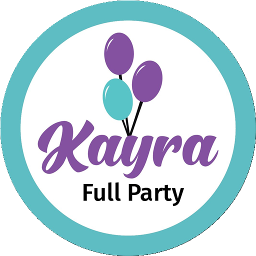

¿Todavía cotizas a mano?
Así es Kayra
01 · DASHBOARD
Tu mes de un vistazo
Cobrado, gastos y beneficio
02 · COTIZACIONES
Cotiza en segundos
PDF y WhatsApp con un toque
03 · CLIENTES
Tus clientes, a mano
Teléfono y dirección
04 · CATÁLOGO
Precios listos
Todos tus servicios
05 · PAGOS
¿Y tu dinero?
Cuenta por cuenta, al día
06 · CIERRES
Cierra el mes
Con un solo clic
07 · GALERÍA
Cada fiesta, en fotos
Tu portafolio siempre listo
08 · TAMBIÉN EN LA PC
Celular y PC
Los mismos datos, al instante

Todo tu negocio, en un solo lugar
Cotiza · Cobra · Cierra el mes